Уровень фермы (награды)
C — списокждёт приёмкиДорога уровней пака: пузырь на уровень (монеты в шестиугольнике, самоцветы и джокер парами, лента «что откроется»), слайдер заливается по опыту; сверху бейдж уровня, снизу выбор сукна. Префаб пака: Reward_Roadmap (+ Slider_Level из Lobby)
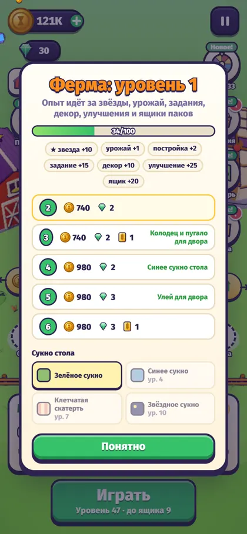
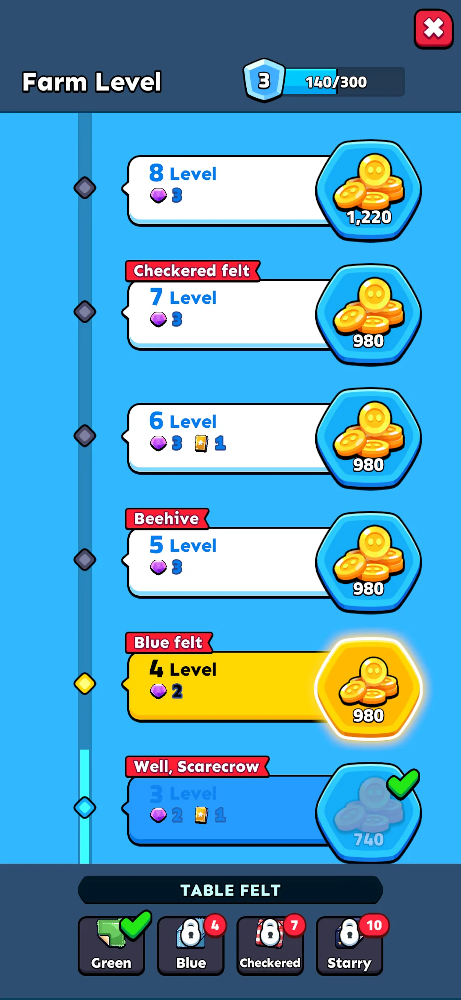
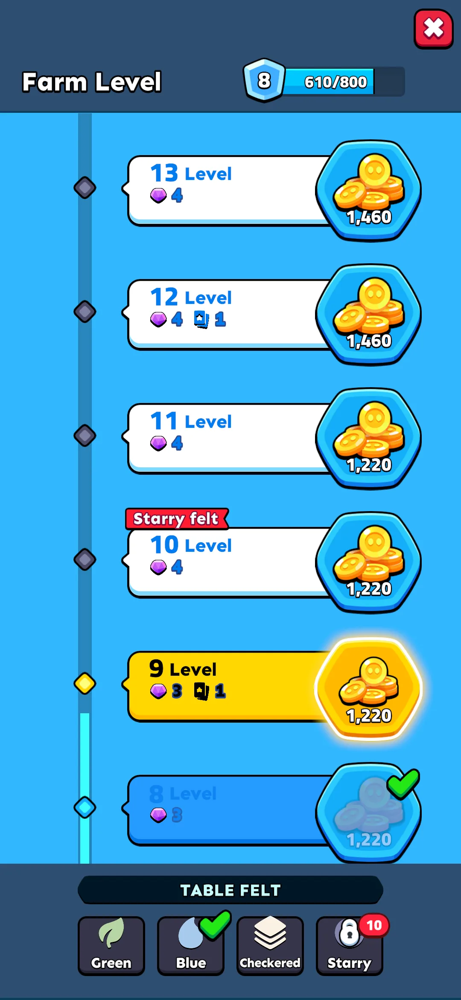
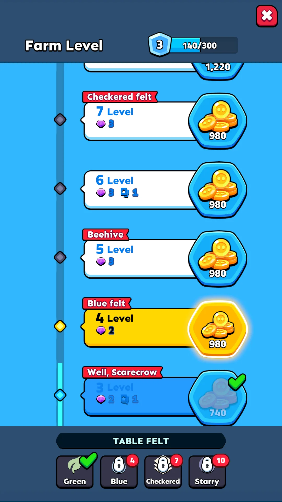
Задания дня
C — список образец типаждёт приёмкиСписок пака: три состояния строк (выполнено с «Claim», в работе, получено), награда иконкой и числом, сундук за все три; таймер до новых заданий. Префаб пака: Mission_List


Словарь
C — списокждёт приёмкиСекция на набор: заголовок с «have/total», карты пака (цветные — собранные наклейки, пустые — нет), ряд награды с «Claim» или галочкой. Префаб пака: Collection_List


Вопросы (2)
- Картинка наклейки — первая картинка категории из набора урожая (CropSprites, пиксельные заглушки); у категорий без картинки — звезда пака. Нужен отдельный арт наклеек?
- 31 категория без своей картинки (drinks … cheeses): догенерировать после пополнения kie.ai или оставить звезду пака?
Подарок дня (7 дней)
C — списокждёт приёмкиСемь ячеек пака: получено / сегодня / впереди, монеты и допы иконками; серия и заморозки по краям большой ячейки, одна «Claim». Префаб пака: Daily_Bonus_7Day


Колесо
D — наградаждёт приёмкиКолесо пака с нашими восемью секторами, SPIN пака; после спина «Claim» с призом и «+1» за видео. Префаб пака: Popup_LuckSpin


Лавка (монеты, наборы, бесплатно, копилка, билет)
B — покупкаждёт приёмкиОдин экран вместо трёх вкладок: FREE (видео, копилка), PACKS (билет, стартовый набор, наборы), COINS (шесть карт). Лавка пака целиком. Префаб пака: Shop (+ Shop_Pass_Deactivate для билета)


Переигровка за звёздами
A — простой попапждёт приёмкиПопап в форме окна старта: имя пака в ярлыке, плашка фактов (звёзды пака, порог золотого ящика, половина награды), ряд плиток уровней со звёздами и прокруткой, PLAY. Префаб пака: Popup_Stage_Start_Sky (как окно старта)
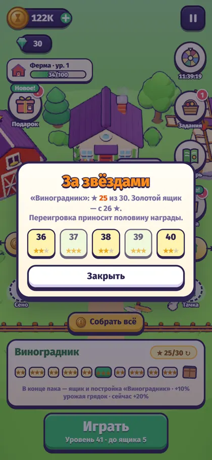
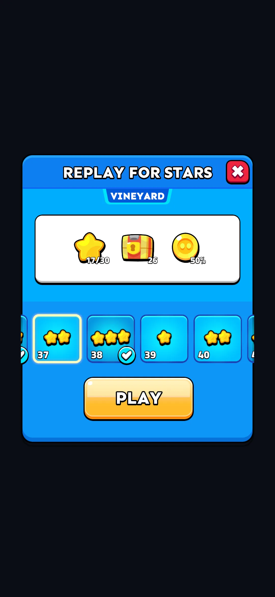
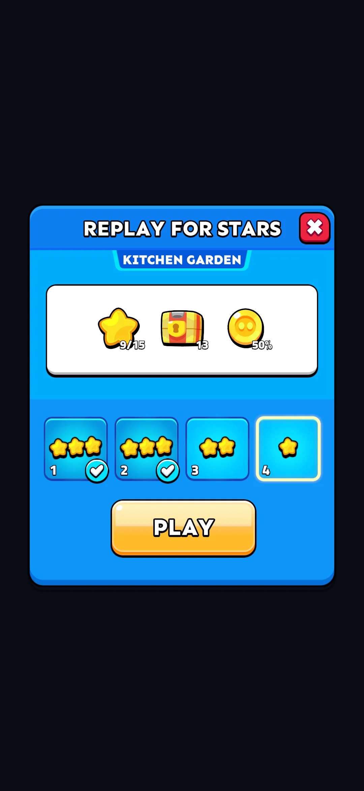
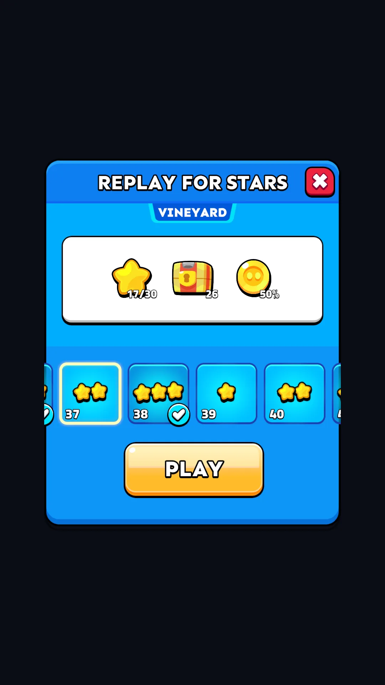
Обучение: рука, подсказки
E — экраныждёт приёмкиПузырь Tutorial_2 с подсказкой шага под верхней панелью и рука пака, указывающая на карту; шаги и условия — из tutorial.js прототипа. Префаб пака: Tutorial_2 (пузырь и рука)
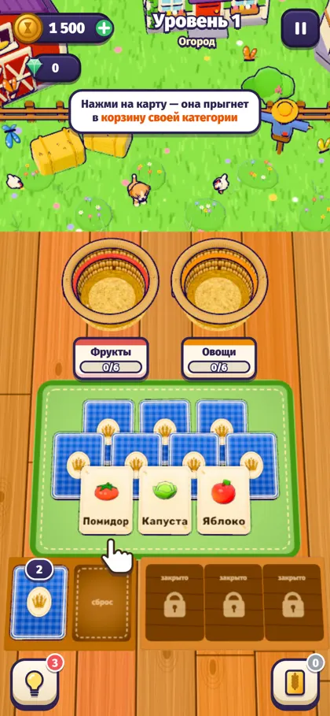
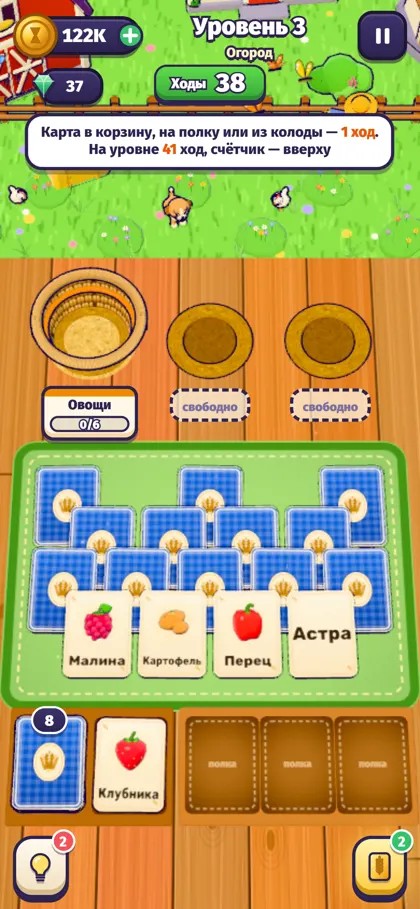
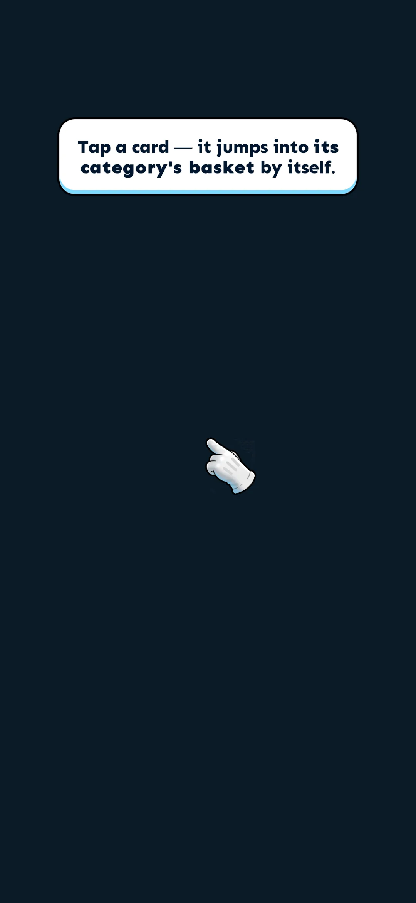
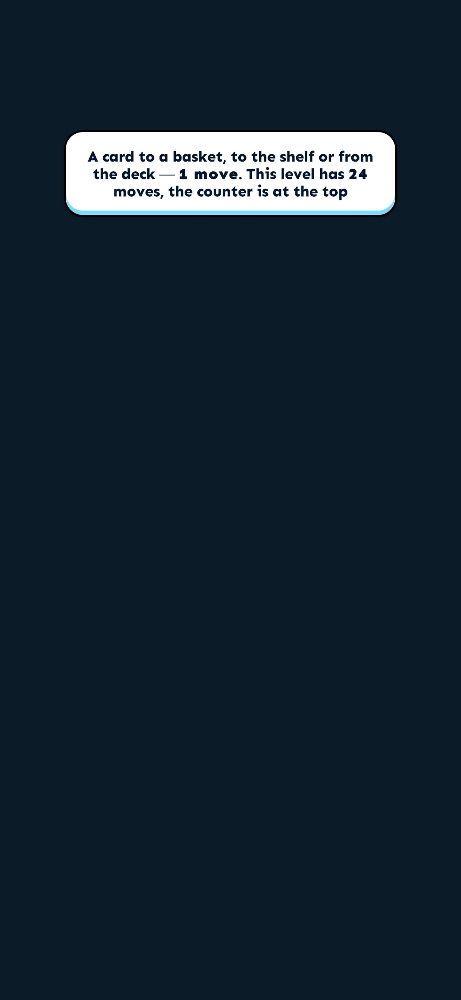
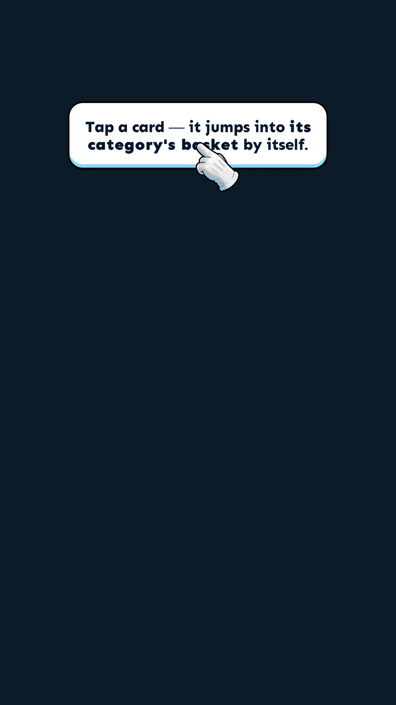
Баннеры и тосты («Фух!», «На последнем ходу!»)
E — экраныждёт приёмкиПолосы Popup_Toast: серая / зелёная / красная для тостов игры внизу, жёлтая с серой — баннер победы («На последнем ходу!», «Поле чистое!») над корзинами. Префаб пака: Popup_Toast
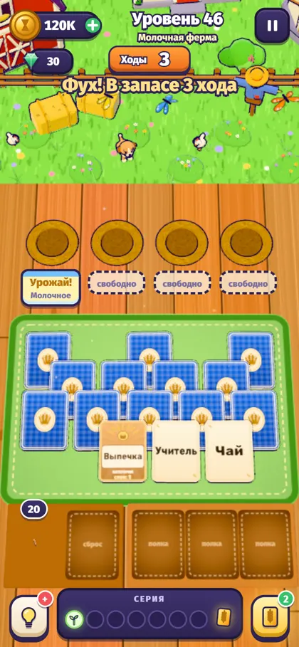
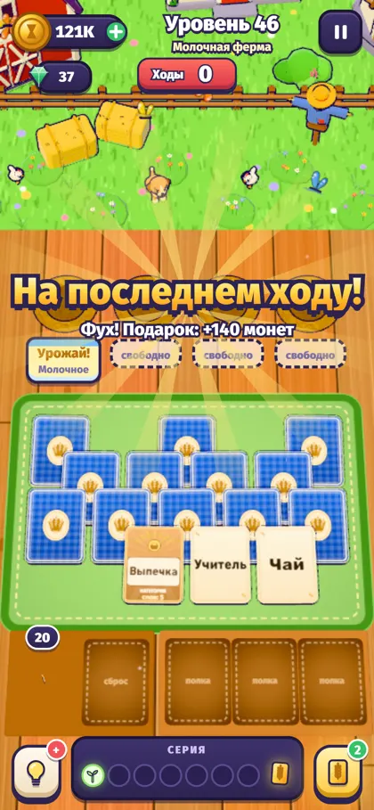
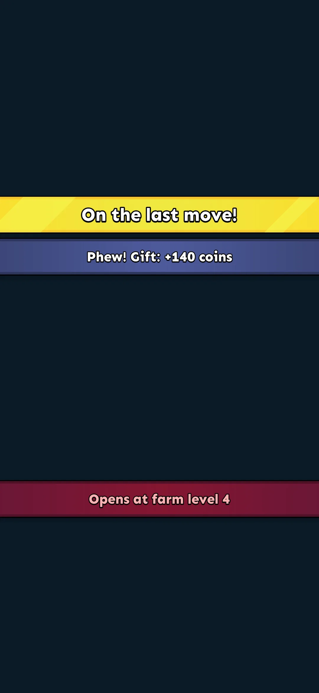
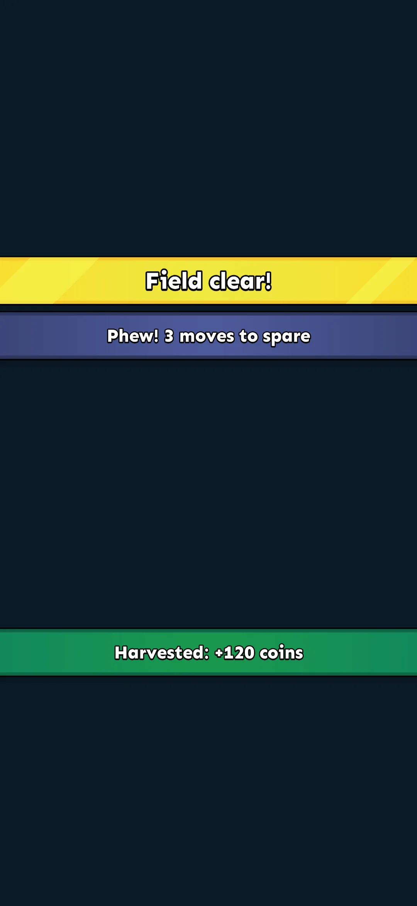
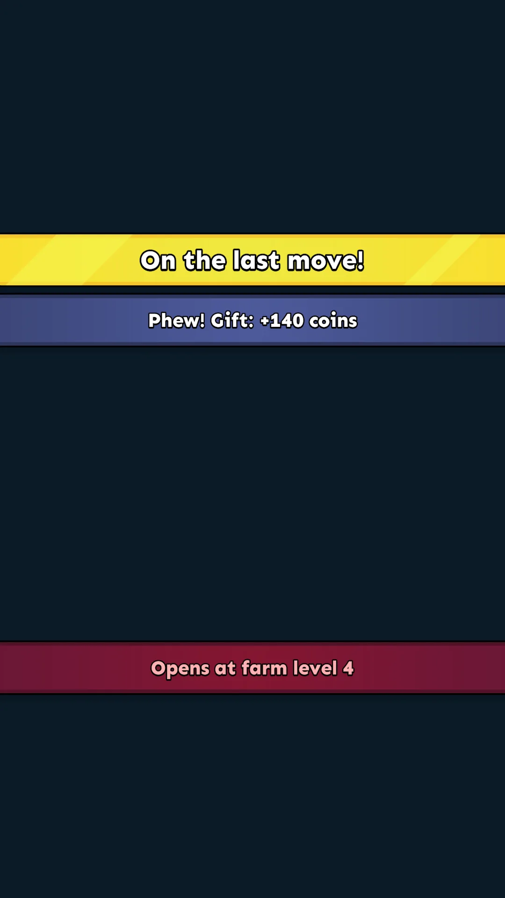